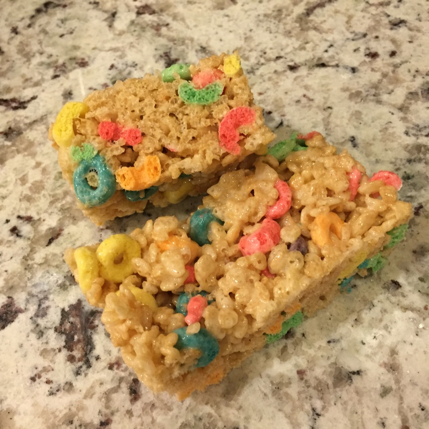

THINGS TO ADD TO RICE KRISPY TREATS TO MAKE THEM 💯
This is a very short list because Rice Krispy treats are near-perfect for what they are: The treat with the highest yum:easy ratio on earth.
-
50% more butter than the recipe says
My personal recipe is a stick of butter and one and a half bags of large marshmallows. This makes them softer and richer. If that half-bag annoys you like it does me then IT SOUNDS LIKE YOU NEED TO MAKE TWO BATCHES.
-

Fruit Loops
Mostly this just makes them pretty without screwing up the texture or flavor. I do eight cups of Rice Krispies and four cups of Fruit Loops (for you non-Americans that's ... Uh ... Ask Siri). And for the love of all things holy use real fruit loops. Not those horrible all natural organic-o's they have at whole foods.